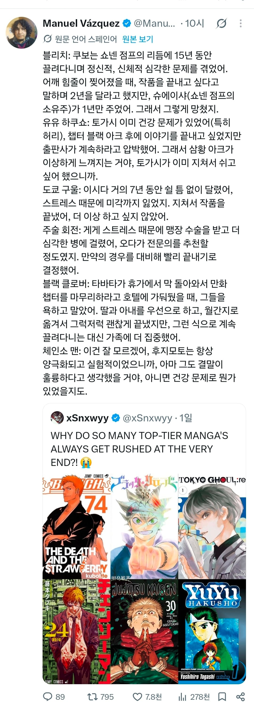

ㄷㄷㄷ
장난없네

ㄷㄷㄷ
장난없네
만화는 개노가다작업이라 시간이랑 몸갈아서 만들수록 먕작이 나오는듯. 웹툰은 저정도로 몸갈아서 만드는게 아니다보니 눈높아진 개붕이들이 만족 못하고
씹 다른건 몰라도 체인쏘맨은 저기에 끼우지 마라 ㅋㅋㅋ
걍 원 트윗이 왤케 일본 만화는 결말 조지는 애들이 많냐고 하면서 엔딩 조진 예시로 체인쏘맨 들고와서 대답해준듯 ㅋㅋㅋ
깨알같은 타츠키 디스
씨불련 만화가 장난이야? 질뿍이 댄스로 완결내는 미친작가
체인소맨 작가는 그 누구의 압박도 없이 혼자 갖다박았다는거냐고 ㅋㅋ
개인적으로 체인쏘맨 2부는 건강이나 번아웃 문제가 있다고 봄
아픈데? 안해줘? 좆박을게 ㄷㄷ
체인소맨 2부도 지좆대로 휴재하고 그랬는데
이런거보고 이학 실드치는 사람은 없길 바란다
???:체인소맨은 결말 꼬라지보면 아픈게 틀림없다
점프가 개짓거리한건 맞는데 블리치 1년 준건 그냥 명예사라고 생각함
인기 떨어져서 1년밖에 안준거겠지만 2년 줬으면 이야기의 완성도는 높지 않았을까? 후반부 이야기 날림이 좀 덜했겠지
쿠보 본인 피셜로 그냥 지가 실패한 거래 ㅋㅋㅋ
흥행이 보장된 S급 작가들한테 왜 여유를 안주는지 이해가 안가는데
언급된 작가들 다 수십년이 지나도 회자될만한 작가들인데 당장 눈앞의 이익에 눈이 멀어버린건가
월간이라면 모를까
주간지면 지금 당장 투입되어 1인분하는 인재가 필요할테니까말야
저 정도급 작가진들이라면
보조작가나 어시들 많이 고용해서 건강 망가질 정도로 안 굴리려면 할 수 있을 거 같은데
대부분 박살나는 거 보면 여러 이유로 어렵나 보네
결론은 체인소맨은 작가의 심신미약으로ㅋㅋㅋ
진짜 만화가들 자기 그림체 학습시켜서 힘빡주는 몇컷만 자기가 그리고 나머지 ai도움받는 거 아니면 사람할 직업이 아니라고 생각함. 이거랑은 상관없는 얘기지만 개드립에도 간간히 만화 올리던 그리폰님 백혈병 걸리셨다더라. 치료비도 후원받던데 개붕이들이 가서 좀 도와주면 좋겠다. 나도 후원하고 옴
아 주술회전이 그래서 후반부에 좆좆회전이 된거였구나
체인소는 시발 편집부 압박 1도 없이 그냥 그새끼가 그러고 싶어서 그렇게 끝낸게 맞을것 같음
주간 잡지연재 자체가 갈아넣기 딱 좋은 구조 아닌가
스토리도 짜고 그림도 그리는데 분량도 많으니
체인소맨 2부는 안나왔잖아
편집자들 압박이나 조언 없었으면 진짜 묻혔을 작가들 많았을테니..음...
죠죠작가가 진짜 대단한거네
작화 폼이 오락가락했어도 꾸준하게 자기관리하면서 지금도 현역인건 ㄹㅇ 말안됨
나도 바로 이양반 생각남 ㅋㅋ
이쯤 되면 원피스는
타츠키는 딱 하나만 밝혀지면 됨
2부가 자의냐 타의냐
ㅋㅋㅋㅋㅋㅋㅋㅋㅋㅋㅋㅋㅋㅋㅋㅋㅋㅋㅋㅋㅋㅋㅋㅋㅋㅋㅋㅋㅋㅋ
전세계 오타쿠들 반응이 다 하나같은거보면 진짜
챕터 블랙아크 삼황아크가 뭐여 ㅋㅋ
체인소맨은 2부 생각 없었는데 편집부 때문에 한거 같던데
체인소맨은 아직도 완결편이 국내에 정발을 안하고 미루는 중
뭐지 작가가 배째라 하는 경우는 없는 건가
그와중에 타츠키는 원래 그런놈임 이라니